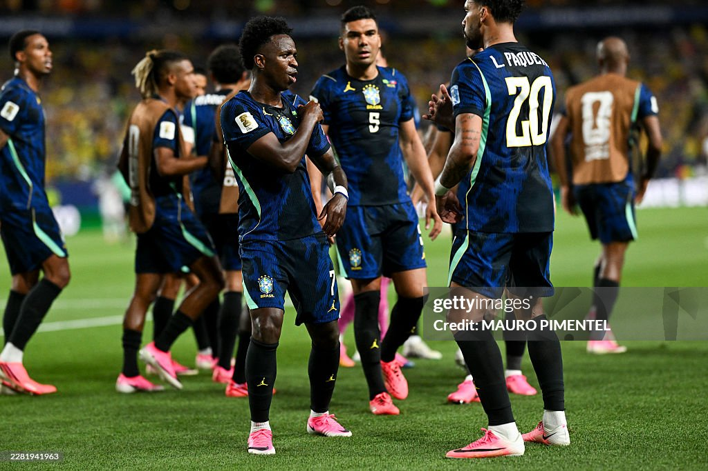

Seleção Brasileira ocupa a liderança do Grupo C da Copa; na próxima fase, chave do Brasil duela com adversários do Grupo F, que tem Holanda, Japão e Suécia na briga

A vitória por 3 a 0 sobre o Haiti deixou a Seleção Brasileira muito próxima da classificação para o mata-mata da Copa do Mundo de 2026. Além da boa campanha no Grupo C, o resultado também permitiu que os torcedores começassem a fazer contas e imaginar os possíveis adversários da equipe na próxima fase.
No cenário atual, o Brasil terminaria a fase de grupos na liderança de sua chave e enfrentaria o Japão nas oitavas de final. Os japoneses ocupam a segunda colocação do Grupo F e chegam embalados após uma grande atuação diante da Tunísia, vencendo por 4 a 0 e se consolidando como uma das surpresas positivas do torneio.
Apesar das projeções, a situação ainda está longe de ser definitiva. A última rodada da fase de grupos pode mudar completamente a classificação, já que as posições de Brasil, Japão e Holanda ainda não estão garantidas. Dependendo dos resultados, a Seleção Brasileira poderá enfrentar outro adversário no início do mata-mata.
Com a possibilidade de encarar os japoneses, a comissão técnica brasileira mantém o foco na reta final da primeira fase. O principal objetivo é confirmar a liderança do grupo e chegar às fases eliminatórias em boa forma para seguir na busca pelo tão sonhado hexacampeonato.